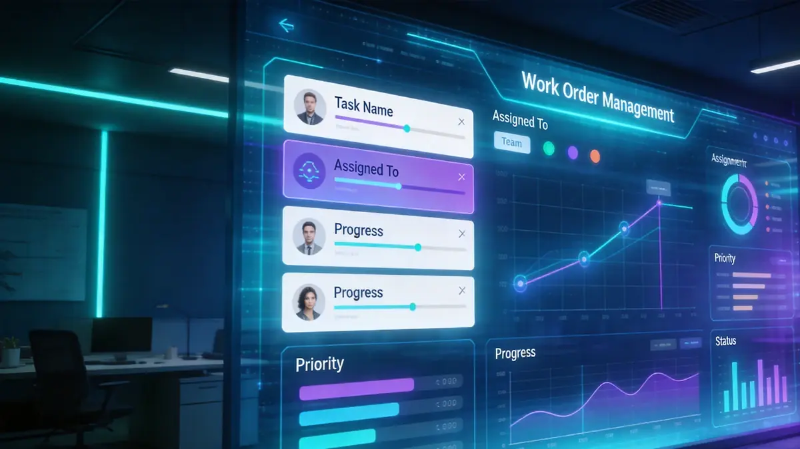

Le Système d'Ordres de Travail digitalise la gestion des demandes de service, améliorant la vitesse de réponse et la satisfaction client.
Fonctionnalités clés
Création de Ticket
Création de tickets multicanaux incluant Web, APP, WeChat et ligne téléphonique.
Dispatch Intelligent
Dispatch automatique ou manuel basé sur la localisation, les compétences et la charge de travail.
Suivi de Progression
Visibilité en temps réel du statut des tickets, avec notifications push par SMS / APP.
Traitement Mobile
Les ingénieurs sur le terrain traitent les tickets via l'APP mobile, supportant l'upload de photos et la confirmation par signature.
Retour Client
Enquête de satisfaction automatique après clôture du ticket, avec scoring NPS.
Analyse de Données
Volume de tickets, temps de réponse, taux de résolution et analyse des performances des ingénieurs.
Scénarios d'application
Système d'Ordres de Travail
Le Système d'Ordres de Travail digitalise la gestion des demandes de service, améliorant la vitesse de réponse et la satisfaction client.

Scénario de Dispatch
Les ordres de travail sont automatiquement dispatchés aux équipes ou ingénieurs concernés, avec prise en charge de l'acceptation mobile, du pointage, du retour photo et du suivi de progression, réalisant une gestion numérique complète de la déclaration à la clôture.
Avantages du système
Prise en charge du suivi en boucle fermée du processus complet, chaque étape de la création de l'ordre à l'achèvement étant traçable. Collaboration multi-terminal (Web, APP, mini-programme) permettant aux ingénieurs sur le terrain de traiter les tâches à tout moment. Lié aux données budgétaires, de présence et d'inventaire, réalisant une gestion de la chaîne complète de la découverte du problème à la clôture.